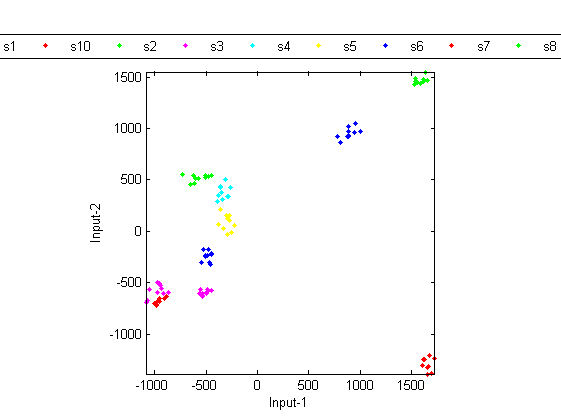
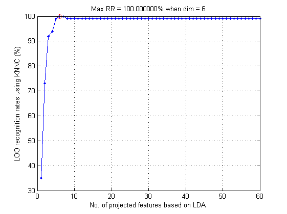
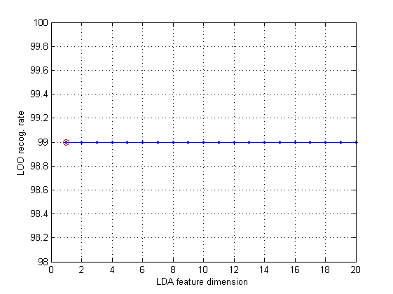
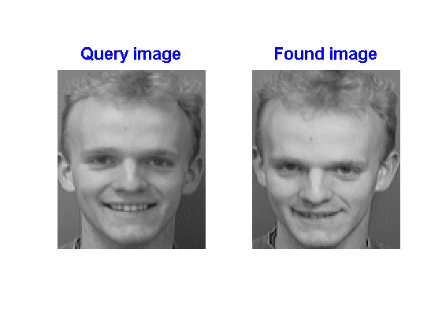

Face Recognition via Fisherfaces (PCA+LDA Projection)
In the previous section, we have explain the use of PCA for face recognition, which reduces the feature dimensions from 10304 (=112*92) to 100. The use of PCA can effectively retain the data variance along the first few dimension. However, it does not consider the classes (or identity) of the dataset.
On the other hand, we can apply LDA after PCA for projecting the data along the dimensions with better discriminative power. It should be noted that
- There no easy way to compute the eigenvectors of LDA using the original 10304 features. As a result, we need to apply PCA first to reduce the dimensions to 100.
- Since the data count is also 100, we cannot use all 100 features for computing the eigenvectors of LDA. (If we use all 100 features, all data points in the same class will be mapped to a single points, leading to a overly optimistic recognition rate of 100%. This is too good to be realistic.)
Contents
Visualization
In the following example, we use the first 60 features after PCA for LDA computation. In order to visualize the data, we select only the first 2 dimensions after LDA for scatter plot:
load faceData.mat load eigenFaceResult.mat % Load A2, eigVec, rowDim, colDim, etc % ====== Create DS DS.input=A2; DS.outputName=unique({faceData.parentDir}); DS.output=zeros(1, size(DS.input,2)); for i=1:length(DS.output) DS.output(i)=find(strcmp(DS.outputName, faceData(i).parentDir)); DS.annotation{i}=faceData(i).path; end % ====== LDA maxDim=60; DS.input=DS.input(1:maxDim, :); DS2=lda(DS); DS2.input=DS2.input(1:2, :); dsScatterPlot(DS2); [recogRate, computed, nearestIndex]=knncLoo(DS2); fprintf('Recog. rate = %.2f%% after 2D proj. of PCA + LDA\n', 100*recogRate);
Recog. rate = 99.00% after 2D proj. of PCA + LDA
Apparently the classes seem to converge much better than PCA alone.
Performance evaluation via LOO test
We can vary the dimensions after LDA (and keep the dimensions after PCA to be 60) to see the effects on the overall recognition rate:
load faceData.mat load eigenFaceResult.mat % Load A2, eigVec, rowDim, colDim, etc % ====== Create DS DS=faceData2ds(faceData); DS.input=A2; % ====== RR w.r.t. no. of eigenvectors maxDim=60; DS.input=DS.input(1:maxDim, :); ldaOpt=ldaPerfViaKnncLoo('defaultOpt'); ldaOpt.maxDim=maxDim; ldaOpt.mode='exact'; recogRate=ldaPerfViaKnncLoo(DS, ldaOpt, 1); [maxRr, index]=max(recogRate); line(index, maxRr*100, 'color', 'r', 'marker', 'o'); fprintf('Max RR=%.2f%% at dim=%d\n', maxRr*100, index);
Max RR=100.00% at dim=6
The recognition rate rises to 100% when the dimension is 3. This indicates how LDA is effective in projecting the dataset along the most discriminative directions.
% However, there is caveat here. % Since we have used the whole dataset for PCA and LDA, the recognition rate is, again, a little overly optimistic. % In order to evaluate the performance objectively, we need to resort to LOO (leave one out) scheme for face recognition. % In other words, when we take a face for test, it cannot be used for computing PCA, LDA, etc. % The following example uses such LOO scheme for performance evaluation. (Be warned that it takes hours to run the example.) load faceData.mat opt.pcaDim=60; % Only use this dimension after PCA maxUsedDim4lda=20; % Max dim. after LDA % ====== Create DS fprintf('Creating DS... ===> '); tic DS=faceData2ds(faceData); fprintf('%.2f sec\n', toc); looRecogRate=zeros(1, maxUsedDim4lda); time=zeros(1, maxUsedDim4lda); for i=1:maxUsedDim4lda opt.ldaDim=i; fprintf('%d/%d: opt.ldaDim=%d, ', opt.ldaDim, maxUsedDim4lda, i); [looRecogRate(i), computedClass, correct, timeVec]=faceRecogPerfLoo(DS, opt); time(i)=sum(timeVec); fprintf('rr=%.2f%%\n', looRecogRate(i)*100); end plot(1:maxUsedDim4lda, looRecogRate*100, '.-'); [maxRr, index]=max(looRecogRate); line(index, maxRr*100, 'color', 'r', 'marker', 'o'); fprintf('Max RR=%.2f%% at dim=%d\n', maxRr*100, index); xlabel('LDA feature dimension'); ylabel('LOO recog. rate'); grid on
Creating DS... ===> 0.00 sec 1/20: opt.ldaDim=1, rr=99.00% 2/20: opt.ldaDim=2, rr=99.00% 3/20: opt.ldaDim=3, rr=99.00% 4/20: opt.ldaDim=4, rr=99.00% 5/20: opt.ldaDim=5, rr=99.00% 6/20: opt.ldaDim=6, rr=99.00% 7/20: opt.ldaDim=7, rr=99.00% 8/20: opt.ldaDim=8, rr=99.00% 9/20: opt.ldaDim=9, rr=99.00% 10/20: opt.ldaDim=10, rr=99.00% 11/20: opt.ldaDim=11, rr=99.00% 12/20: opt.ldaDim=12, rr=99.00% 13/20: opt.ldaDim=13, rr=99.00% 14/20: opt.ldaDim=14, rr=99.00% 15/20: opt.ldaDim=15, rr=99.00% 16/20: opt.ldaDim=16, rr=99.00% 17/20: opt.ldaDim=17, rr=99.00% 18/20: opt.ldaDim=18, rr=99.00% 19/20: opt.ldaDim=19, rr=99.00% 20/20: opt.ldaDim=20, rr=99.00% Max RR=99.00% at dim=1
The example indicates that the objective estimated performance of PCA + LDA for face recognition is 99.00% when the dimension is only 3!
Demo
Example demo for face recognition using PCA is shown next:
load faceData.mat frOpt.method='pca+lda'; frOpt.pcaDim=60; frOpt.ldaDim=3; frOpt.plot=1; faceRecogDemo(faceData, frOpt);
Method=pca+lda Time=0.17 sec
References
- Peter N. Belhumeur, Joao P. Hespanha, and David J. Kriegman, "Eigenfaces vs. Fisherfaces: Recognition Using Class Specific Linear Projection". IEEE Transactions on Pattern Analysis and Machine Intelligence 19 (7): 711–720, 1997.
Copyright 2011-2012 Jyh-Shing Roger Jang.